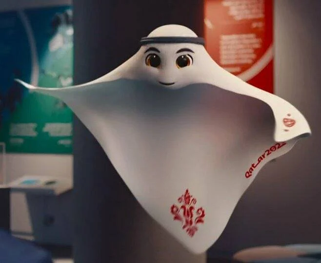

Sobre a copa do mundo
Personagem foi inspirado em lenço típico da região e, de acordo com a organização, nome significa “jogador super-habilidoso”
O mascote da Copa do Mundo FIFA 2022 foi apresentado durante o sorteio dos grupos, no início do ano, e foi batizado La'eeb – que, de acordo com a organização, significa “jogador super-habilidoso” em árabe. Com a forma inspirada no Keffiyeh, lenço para cabeça característico do Catar, a animação mantém a tradição de incluir elementos regionais dos países-sede nos personagens. A menos de um mês do início da Copa do Mundo no Catar, os preparativos para a os jogos já começaram. E isso inclui a programação para assistir às partidas da seleção brasileira em busca do hexacampeonato. O torneio trouxe uma mudança importante em relação às edições anteriores para quem pretende acompanhar os jogos. Essa é a primeira vez que a bola vai rolar em um país do Oriente Médio e nas vésperas das comemorações de fim de ano. A disputa da Copa do Mundo tradicionalmente acontece em julho, mas as altas temperaturas do Catar nesta época do ano fez com que a competição fosse transferida para o último bimestre de 2022. Oficialmente, a disputa pelo título começa em 20 de novembro.